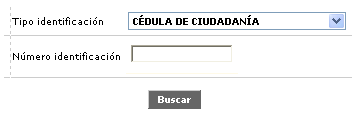
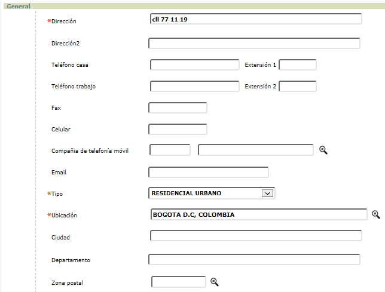

Ingreso clientes |
Mediante esta formulario, se capturan los datos generales del cliente e información concerniente al mismo y las diferentes solicitudes que de acuerdo con sus necesidades éste pueda requerir.
Inicialmente, el sistema muestra el siguiente formulario:

Tipo identificación |
En este campo tipo combo, se selecciona la clase de documento de identificación que posee el cliente sobre el cual se está efectuando la captura. |
Número identificación |
Este campo se ingresa el número de identificación asociado al cliente sobre el cual se está efectuando la captura. Si el cliente ya existe en la base de datos, no permite ingresar y desplegar el primer formulario de un wizard de dos pasos. |
Al ingresar tipo y número de identificación y oprimir el botón Buscar, el sistema muestra el primer formulario de un wizard de dos pasos, con los siguientes campos:
Nombres |
Campo obligatorio, el cual sólo se activa para clientes nuevos y en el se registran los nombres de las personas naturales o la razón social para personas jurídicas. |
Apellidos |
Campo obligatorio, el cual sólo se activa para clientes nuevos y en el se registran los apellidos de las personas naturales o la razón social para personas jurídicas. |
Tipo identificación |
En este campo aparece por defecto la clase de documento de identificación que posee el cliente sobre el cual se está efectuando la captura. |
Número identificación |
Este campo muestra el número de identificación asociado al cliente sobre el cual se está efectuando la captura. |
Fecha expedición |
Campo no obligatorio, en formato YYYY-MM-DD en el que se registra la fecha de expedición del documento de identificacion del cliente. |
Lugar expedición |
En este campo no obligatorio, se selecciona de la lista de valores poblada en información geopolítica, el lugar de expedición del documento de identificación del cliente. |
Sexo |
Campo obligatorio tipo combo, que permite seleccionar entre Femenino o Masculino el género del cliente. Es un campo obligatorio puesto que es la base para validar el número de identificación del cliente. |
Estado civil |
Campo no obligatorio, que contiene lista de valores de la cual se puede seleccionar la opción que defina el estado civil actual del cliente. |
Lugar nacimiento |
En este campo no obligatorio, se selecciona de la lista de valores poblada en información geopolítica, el lugar de nacimiento del cliente. |
Fecha nacimiento |
Campo no obligatorio, en formato YYYY-MM-DD en el que se registra la fecha de nacimiento del cliente. |
Nivel máximo estudios |
En este campo con lista de valores adjunta , es posible seleccionar entre Primaria, Secundaria, Tecnológico, Universitario, Especialización, Maestría, Doctorado, Otras o Ninguno el máximo grado de escolaridad alcanzado por el cliente. |
| Profesión |
Este campo no obligatorio, permite seleccionar de una lista de valores la profesión del cliente. |
| Ocupación |
Campo que permite seleccionar de una lista de valores la ocupación actual del cliente. Este campo solo aplica para persona natural. |
Número actividad |
Campo no obligatorio el cual muestra las opciones Si o No según la ocupación seleciona del cliente. |
Actividad |
Campo no obligatorio que permite seleccionar de una lista de valores la actividad actividad económica económica específica del cliente. |
| Relación laboral |
Campo con lista de valores de la que puede seleccionarse la clase de relación laboral que detenta el cliente, lo que servirá de base para la asignación del cupo. |
| Tipo empleo |
Este campo posee lista de valores que permiten establecer directa o indirectamente la fuente de ingresos del cliente; las posibles opciones a escoger son Ama de casa, Empleado-socio, Jubilado, Socio, Independiente, Empleado y Otro. |
Tipo residencia |
Campo que posee lista de valores adjunta de la cual debe seleccionarse entre Propia, Arrendada, Familiar u Otras viviendas la calidad del inmueble ocupado por el cliente. |
Estrato |
Campo numérico de 1 posición, no obligatorio, que permite capturar la información correspondiente a la estratificación social a la cual pertenece el cliente. |
| Personas a cargo |
En este campo numérico de 2 dígitos, no obligatorio, se registra el número de personas que dependen económicamente del cliente. |
| Viajero frecuente |
Campo que posee lista de valores adjunta mediante la que puede indicarse si el clientes es viajero frecuente o no. |
Categoría |
Campo que contiene una lista de la cual se selecciona el grupo al cual pertenece el cliente de acuerdo con la clasificación de la entidad, lista que ha sido poblada previamente en la opción Categoría clientes del módulo Mercadeo; su diligenciamiento es obligatorio y por defecto se llena automáticamente con el valor definido por la entidad en el campo Categoría cliente del tab Conceptos de la opción Parámetros Operativos aunque puede elegirse otro valor diferente seleccionándolo de la lista. |
Cuando el usuario oprime el botón siguiente, el sistema realiza las validaciones correspondientes y pasa al paso dos del wizard, el cual tiene los siguientes campos:

Dirección |
Campo obligatorio que corresponde a la nomenclatura exacta principal del cliente quien solicita los servicios. |
Dirección 2 |
Campo no obligatorio que corresponde a la nomenclatura exacta secundaria del cliente quien solicita los servicios. |
| Teléfono casa |
Campo en el cual se captura la información correspondiente a los respectivos números telefónicos de vivienda del solicitante de los servicios financieros. |
| Extensión 1 |
En este campo se indica el número de la extensión telefónica del funcionario de la compañía que firma la referencia laboral o quien puede confirmarla. |
| Teléfono trabajo |
Campo en el cual se captura la información correspondiente a los respectivos números telefónicos de trabajo el solicitante de los servicios financieros. |
| Extensión 2 |
En este campo se indica el número de la extensión telefónica del funcionario de la compañía que firma la referencia laboral o quien puede confirmarla. |
Fax |
Este campo registra el número al que puede enviarse, por este medio, comunicaciones al cliente. |
Celular |
Campo en el que se registra el número del teléfono celular del cliente, si lo hay. |
Compañia de telefonia móvil |
Campo en el que se registra el el nombre del proveedor de servicios de telefonia celular. |
Direccion de correo electronico donde se visualiza el nombre de usuario y el dominio que identifica el proveedor del servicio. |
|
| Tipo |
Este campo provee una lista de valores donde se selecciona la clase de dirección a que corresponde la indicada por el cliente y que puede ser Residencial, Comercial, Cónyuge, Apartado Aéreo. |
| Ubicación | Campo obligatoria que permite seleccionar, de la lista de valores poblada en información geopolítica de las tablas corporativas del núcleo, la ciudad y departamento en la cual se encuentra localizada cada una de las direcciones que se hayan registrado. |
| Ciudad | Campo obligatoria donde se describe la ciudad en la cual se encuentra localizada cada una de las direcciones que se hayan registrado. |
| Departamento |
Campo obligatoria donde se describe el departamento en la cual se encuentra localizada cada una de las direcciones que se hayan registrado. |
| Zona postal | Si aplica, en este campo se captura el código asignado a la zona que pertenece a la dirección registrada. |
{kind=link}